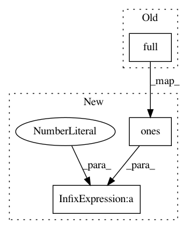

4bfa51ad2420895d103c575cb7eceeeba7d47f80,dipy/direction/tests/test_bootstrap_direction_getter.py,,test_bdg_residual,#,95
Before Change
hsph_updated = HemiSphere.from_sphere(unit_icosahedron).subdivide(2)
vertices = hsph_updated.vertices
bvecs = vertices
bvals = np.full(len(vertices),1000)
bvecs = np.insert(bvecs, 0, np.array([0, 0, 0]), axis=0)
bvals = np.insert(bvals, 0, 0)
gtab = gradient_table(bvals, bvecs)
r, theta, phi = cart2sphere(*vertices.T)
After Change
hsph_updated = HemiSphere.from_sphere(unit_icosahedron).subdivide(2)
vertices = hsph_updated.vertices
bvecs = vertices
bvals = np.ones(len(vertices)) * 1000
bvecs = np.insert(bvecs, 0, np.array([0, 0, 0]), axis=0)
bvals = np.insert(bvals, 0, 0)
gtab = gradient_table(bvals, bvecs)
r, theta, phi = cart2sphere(*vertices.T)
In pattern: SUPERPATTERN
Frequency: 3
Non-data size: 3
Instances
Project Name: nipy/dipy
Commit Name: 4bfa51ad2420895d103c575cb7eceeeba7d47f80
Time: 2018-04-25
Author: girard.gabriel@gmail.com
File Name: dipy/direction/tests/test_bootstrap_direction_getter.py
Class Name:
Method Name: test_bdg_residual
Project Name: eriklindernoren/Keras-GAN
Commit Name: 744353138995f1b15933be6ee2d39f7b83ee1b1f
Time: 2017-07-16
Author: eriklindernoren@live.se
File Name: sgan.py
Class Name: SGAN
Method Name: train
Project Name: nipy/dipy
Commit Name: 4bfa51ad2420895d103c575cb7eceeeba7d47f80
Time: 2018-04-25
Author: girard.gabriel@gmail.com
File Name: dipy/direction/tests/test_bootstrap_direction_getter.py
Class Name:
Method Name: test_bdg_initial_direction